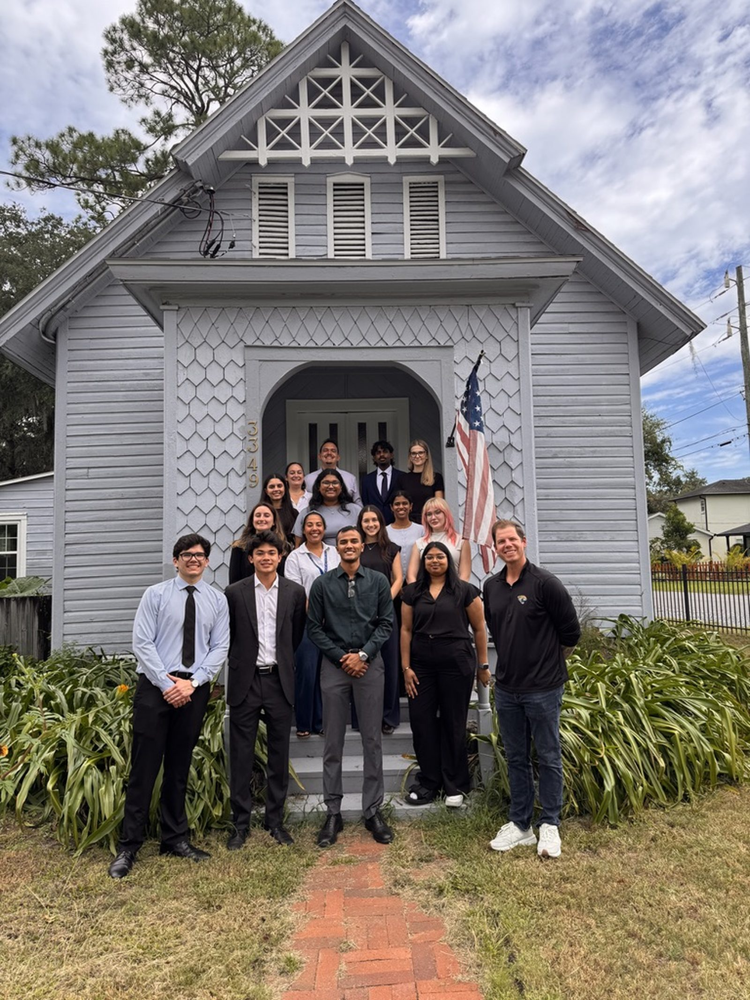
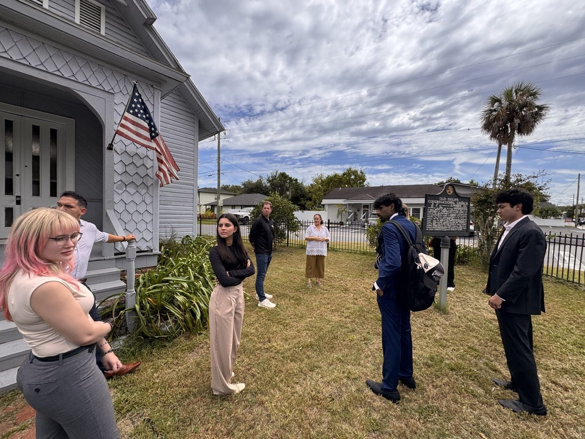
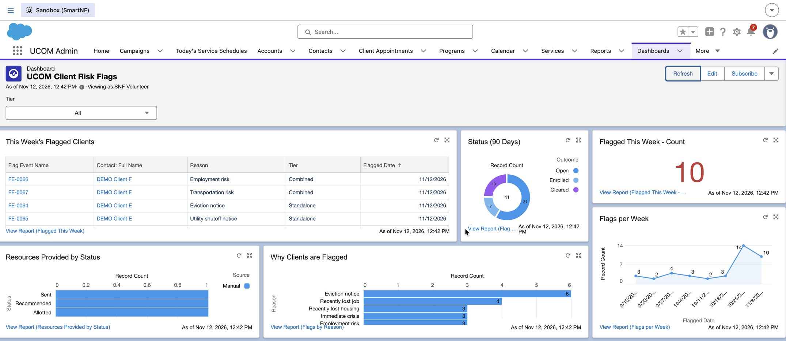

Never miss a sign: an escalation trigger for a food pantry, built inside its own Salesforce

Site-visit day, 19 Sep 2026. The pantry occupies a former chapel on Jacksonville's Southside.A Jacksonville food pantry was losing crisis signals in volunteers' notes. In nine weeks we taught its own Salesforce to raise a flag, match a resource, and put the right person on a dashboard the next morning. No code, no new licences, no client data touched.
Escalations were falling through the cracks
UCOM runs a food pantry across seven zip codes, plus financial assistance, senior nutrition and referrals. About 98% of first contacts are for food. The question was what happens to the rest of what people say.
What the client called "intake" turned out to be two steps. A ninety-second demographic sign-up makes someone a food-program recipient. An elevation to case management (budget counselling, job coaching, rent or utility help) makes them a client. That second step used to happen because S., the Executive Director and a lawyer by training, interviewed people face to face and could surface a crisis in five minutes. As the organisation grew and intake moved to volunteers at the curb, the elevation stopped. The only mechanism left was a volunteer typing see K. into a free-text note that nothing reads.
They wanted three things: to never miss a sign, to track who keeps coming back, and a CRM that shows at a glance how many people are visiting more than once, because a second visit in a month is itself a signal. The written brief had named three goals: intake friction, identity tracking, referral routing. The visit collapsed them into one. The trigger.

The pieces were already installed. Nobody had connected them.
Before designing anything I surveyed the Salesforce sandbox, metadata only, and mapped the paper intake form field by field. The survey reframed the project: the right answer was configuration, not a build.
The mapping also showed what the form never asked: any change question (lost a job, lost SNAP, car broke down), whether the person had been before, or insurance status. So the escalation screen needed three or four change questions layered on an existing form, not a new instrument. Data quality set the ceiling; I handed the full list to the analytics team and designed the rule around fields clean enough to trust.
Four stages. We configured the one that fires.
In week five S. widened the frame to a four-stage process. The team adopted it: stage two configured and demonstrated in the sandbox, the rest designed, prototyped or handed on.
Enroll
One ten-question set across every channel; a self-service form by link or QR code in English, Spanish, Russian and Arabic.
Screen & flag
A record-triggered flow reads indicators the client already collects and creates a flag event with a reason and a tier.
Refer
A matching rule links each reason to K.'s resource catalogue; one click logs what was sent, recommended or allotted.
Track
Status per flag (open, enrolled, cleared) and the three outcomes S. named, mapped to a field or a gap; reporting handed to the analytics team.
Inside stage two
A client record changes
Record-triggered flow
- Any condition true → create a flag event with reason and tier (standalone or combined)
- Match the reason to the resource catalogue
- Never un-flags by itself; a person does
Client Risk Flags dashboard
- This week's flags: reason, tier, date
- 90-day status, flags per week, resources provided
- One-click "Give Resources" logging
- Opens for whoever is on shift; volunteers share one login

Three choices shaped it. Each flag is its own event rather than a checkbox, so a client flagged twice for different reasons shows two lines and the weekly count is a real number. The shortfall is a formula, because the data was already there. And because volunteers share one login, nothing depends on who is signed in: the landing is a dashboard, not a task assigned to "the current user".
How the nine weeks ran
I split the co-PM role with Mike Magraner by domain. I owned everything external: every email and call with the client, the scope, the weekly check-in, the single name on each message. Internally I coordinated the technical work and formed the workstreams: a cases-and-questions pair to mine S.'s past cases for indicators, a Salesforce group for the forms and the flag build, a dashboard sub-team, and an archival lane. I held the vision for the forms, and my recurring job was the translation layer, checking that each technical decision still matched the pain point we heard on site. Mike ran the midpoint and final presentations and coordinated platform access.
Governance, treated as design
The intermediary's rules were absolute: no personally identifiable information, no financial information, no donor data, and any accidental PII returned, reported and deleted.
Donors and clients share the same Contact and Household objects, so the donor prohibition meant correct filtering inside a shared system. When the admin offered a sandbox, I asked in advance for a Developer or masked Partial Copy rather than a full copy of production. The team treated the sandbox as if it held real data regardless.
Setup and metadata only; no client record opened. Every record we created was prefixed TEST-. No existing flow edited, only clones. No picklist value changed. Every metadata save confirmed by a PM and logged with a rollback.
When a Salesforce release made passkeys mandatory for privileged users, I traced it to the shared seat's admin profile instead of adopting the other team's daily workaround, and proposed a non-privileged shared user for analysts plus one builder login for the PMs.
The rule reads structured fields only. Free-text notes, where clients' unprompted health disclosures live, never enter it.
Built, tested, activated, demonstrated. Then handed over.
The flag went live in the sandbox a week before the deadline and was demonstrated to the client on 13 Nov. The control case, a client with no risk signal edited for something unrelated, correctly does not flag.
"Each presentation was fantastic and you all should be proud of yourselves and your teams. Thanks again for giving your time to these organizations. You've truly made a difference in the community."C., Executive Director, Smart North Florida · 16 Nov 2026
What this engagement taught me
Don't build what the client already owns.
The case-management package was installed, with a Watch List field nobody used. Finding that took a metadata survey, not a benchmark scan. My vendor-side instinct would have been to propose something; the consultant's job was to find what was already there.
The constraint is the design.
Every recommendation had to survive a volunteer administrator with a few hours a month. That ruled out external BI tools, custom code and a fresh org. It ruled in one flow and a dashboard.
Scope is a listening problem.
The brief said three things; the site visit said one, in the client's own words. I went in favouring referral routing and left with the trigger, because I read the transcript against the brief instead of the brief against the transcript.
Governance earns trust faster than deliverables.
Asking for a masked sandbox before it existed, keeping free-text disclosures out of the rule, and declining a credential shortcut cost a few hours. They are also why the risk owner let us demo in front of the client.
Two teams, one dependency.
The analytics team needed visit-frequency trends; those are impossible without knowing two visits belong to one household. Our data-quality findings were their requirements. Neither brief showed this; a standing sync did.
What I'd do differently.
Secure a named contact, a recurring check-in and permission to time a live intake before leaving the first meeting, not by email afterwards. The baseline we never timed is the number I most wish this page had.
Prithviksit Pakala · MS-ISOM, University of Florida · UF AIS Consulting Committee, Autumn 2026. Client staff are referred to by initial; every screenshot shows demo records only.
Back to Prithviksit's portfolio
Stack: Salesforce Nonprofit Success Pack, Program Management Module, Nonprofit Case Management; Flow Builder, formula fields, list views, dashboards.